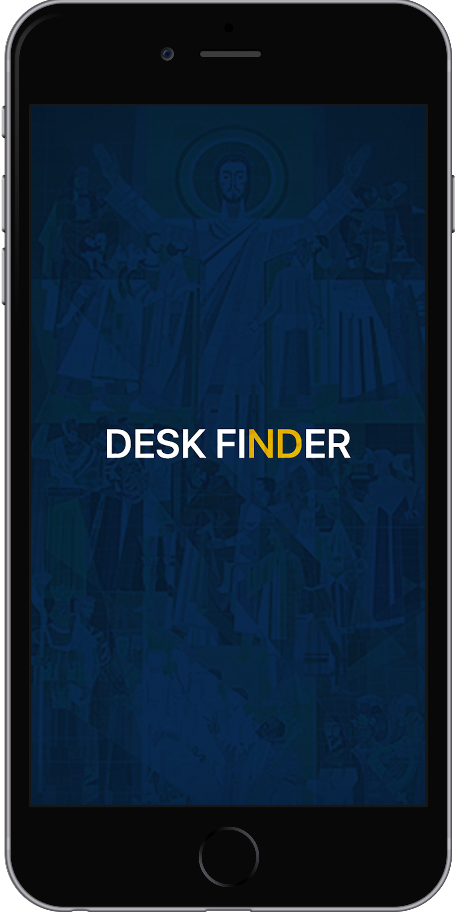

Hello World,
I'm Joseph Han
I am currently a UX engineer intern at üë®ü誂Äçüé® VSA Partners with past experiences at üêî Chick-fil-A Corporate and üî¨Mobile Computing Lab (M-Lab). I recently graduated from üçÄ University of Notre Dame '20 with a B.S. in Computer Science and focus in product design. I love problem solving and thinking outside of the box to develop creative, efficient solutions! üß©

Modular Camera
MANUAL MODE FOR THE HARDWARE
Modular camera is a new way to envision cameras. Consumers have been forced to used certain 'presets' of cameras, but what if they were
given the opportunity to format them to their preference. Currently working with Teaching Scholar Hector Silva
on this project.
Broker
easy online poker
Broker is a way to play poker with friends online without the hassle of signing up. Simply create a room and share the code with friends.
It works across different mobile devices and desktop.
Spark
MATCH. RIDE. SAVE.
Spark is a start-up that is to become the solution for college students who are always trying to figure out who they can ride share with. As its UX designer, I was tasked with designing the web app interface and designing other visual elements.
Venmo
SPLIT PAY THE RIGHT WAY
Venmo Split Pay is a new feature to the application that comes with the Venmo Card. It is indeed very helpful, but it still needs some improvement. Split Pay needs a metric visual metric as well as better method of splitting remaining cost.

LinkedIn
IMPROVING NAVIGATION
Though LinkedIn is a powerful tool, it seems like the mobile platform could be better in terms of navigation. Here is my take on making the navigation more efficient.

Weather gets better.
NOW WITH SIRI
The Weather app has not been updated since iOS 7.
Even the Reminders app got a new look and style in iOS 13.
Here is my take on new Weather app.
Even the Reminders app got a new look and style in iOS 13.
Here is my take on new Weather app.
Fictional Brand
experimentation with imagination
This is just for fun and a way for me to get my creative juices flowing.
As someone who is into fashion, it is interesting to come up with unimaginable apparels or collaborations.
Desk Finder
find seats faster
In my spring 2019 Human Computer Interaction class, my team prototyped an iOS application that would help students, staff, and guest find seats throughout the Hesburgh Library. This was a project that emphasized more on UI/UX study than design. We initially noticed a widespread issue of students struggling to find seats that suit their study needs, especially during finals week. We incorporated features that would fix this by allowing seat searches with different properties. We followed the steps of prototyping and applied the knowledge of HCI that we learned in class. Check out our cases study and design report that includes our development and feedback studies.

Vfx
New exploration. New learning.
I was always curious about animation and 3D modeling, but never actually tried it.
I finally decided to take a class called “Technical Aspects of Visual Effects,” taught by Professor Ramzi Bualuan.
I learned many different things about fundamental concepts of 3D modeling, texturing, lighting, and rendering.
This course was taught with Autodesk Maya covered the programming aspect that utilized MEL and Python.
Here are some of my VFX projects.
Necto
make group activities sweeter
The theme of Notre Dame's 2019 Library Hackathon was "Synergy: Holistic Solution for the Whole Student." My team and I decided to build a tool that acts as a social ground for people to discover each other for activities. As we get comfortable with our friend groups, it is hard to get out and meet new people. We also come across situations when we need one or two more people for certain activities. That's when necto. comes into play. Users can post various activities with or without set limit on the number of participants. Other users can then join in and View more information of the event. As the lead designer for this project, I made sure to make an easy, straightforward user experience. The front end was created with React and Bootstrap.
M-Lab
mobile computing lab
At Notre Dame’s Mobile Computing Lab (m-lab), I was tasked to help code and debug an undergoing iOS application, 'koios,' that collects and calculates various user data to be used in Parkinson’s disease analysis and studies. The application serves as a hub of surveys and a data-collecting tool for research studies outside of Parkinson’s disease as well. The application was designed and developed in Xcode. I assisted in revamping the UI/UX of the application for easier navigation and better accessibility. I also helped redesign the logo and website.

Feather
combine fashion and weather
For the 2017 AT&T Hackathon held at South bend, my team and I decided to build an Android app that helps people pick outfits. It allows people to build their own custom wardrobe by simply taking pictures of their apparels. Implementing IBM Watson API allowed us to easily identify what types of clothes the user had as well as the colors and styles. This tool was specifically designed to generate outfits depending on the weather of the location that the user was in. As it is used more often, the app gradually better understands the style of the users and also creates a recommendation feed of the latest fashion trends. The app was built using Android Studio.
Align bulb
more than just one color
As part of the GE Align Lighting Technology project, I collaborated with team members to develop an LED light bulb that could change its color based on the time of day or the color preference of the user. The tunable bulb was to produce both the energizing effect of the GE Align AM bulb and the soothing effect of the GE Align PM bulb. I helped develop the backend code in MATLAB that calculates different color tones as well as created the GUI that allows users to pick their color choice from CIE color space. I also assisted in designing the circuit using an Arduino breadboard.
Whatever you value, be committed to it and let nothing distract you from this goal.